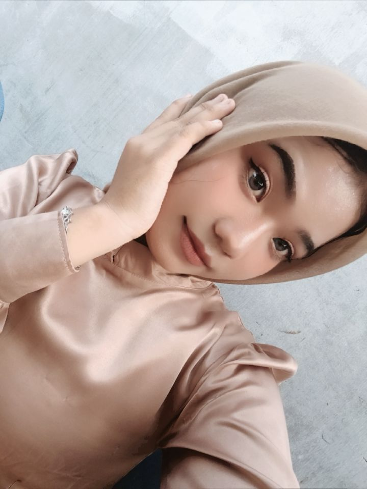

Saya adalah pribadi yang senang menambah pengetahuan, mengembangkan kemampuan diri, dan mencari pengalaman baru untuk meraih masa depan yang baik
Kenali Saya
Perkenalkan, nama saya Lailatul Mardiah. Saya merupakan mahasiswa Politeknik Negeri Medan yang memiliki minat dalam bidang teknologi informasi. Saya senang mempelajari pemrograman, membuat website, dan mencoba berbagai teknologi baru. Saya juga mampu bekerja sama dalam tim, berkomunikasi, serta berusaha menyelesaikan setiap tugas dengan baik.
Program Studi Manajemen Informatika
Mahasiswa
Membuat struktur halaman website.
Mendesain tampilan website agar menarik.
Membuat website menjadi interaktif.
Mengelola dan menyimpan data menggunakan SQL.
Website pribadi untuk memperkenalkan identitas, kemampuan, dan pengalaman.
Aplikasi katalog aksesoris yang dikembangkan menggunakan Flutter.
Proyek pengelolaan data mahasiswa menggunakan database SQL.
Saya senang bermain game untuk menghibur diri saya dan juga untuk bersantai dan mengisi waktu kosong. .
Saya suka mendengarkan musik untuk menemani kegiatan saya sehari-hari dan untuk menemani di saat saya lagi sedih/galau, dan menambah semangat berkegiatan .
Saya senang mempelajari perkembangan teknologi dan mengeksplorasi hal-hal baru di dunia digital. walaupun saya tidak sepenuhnya mengetahui di dunia digital
Terima kasih telah mengunjungi website portofolio saya.
Kirim Email